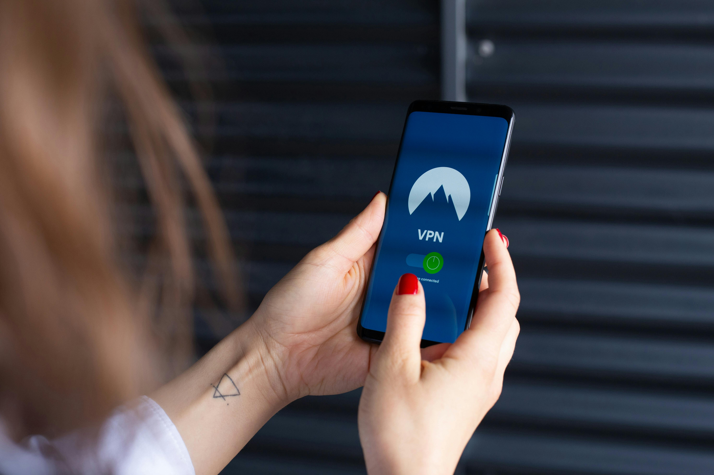

VPN

In the world of technology, protecting one's online privacy is very important. One of the most effective
tools
for
achieving this is Virtual Private Network (VPN). But what exactly is a VPN, and how does it work? In this
blog,
we’ll
break down the concept of a VPN, its benefits, and why you might consider using one.
What is VPN?
A Virtual Private Network (VPN) is a technology that creates a secure, encrypted connection between your
device
and a
remote server operated by the VPN provider. This connection, often referred to as a "tunnel," allows you to
browse the
internet privately and securely.
How does VPN work?
When you use a VPN, your internet traffic is routed through the VPN server before reaching its final
destination.
This
process hides your original IP address and encrypts your data, making it difficult for third parties, such
as
hackers
and ISPs (Internet Service Providers), to monitor your online activities. The internet views your activity
as
coming
from the IP of the VPN server, thus protecting your privacy.
What does VPN offer?
- Encryption: A VPN encrypts your internet traffic, which means your data is encoded into a format
that
is
unreadable by
humans. This encryption protects your data from being intercepted and read by unauthorized parties.
- Hiding IP address: When you are connected to a VPN server, your original IP address is hidden and
replaced
with the IP
address of the VPN server. This helps mask your location and makes it harder for websites and other
parties
to track
your internet activities.
- Secure Connection: The VPN creates a secure tunnel between your device and the VPN server. This
tunnel
protects your
data from being intercepted by anyone on the same network. So, VPN is suggested while using public WiFi.
- Access to Restricted Content: By connecting to a VPN server in a different geographic location,
you
can
bypass regional
restrictions and access content that is blocked in your country.
Benefits of using VPN
- Enhanced Privacy: VPN hides your IP address and encrypts your online activities, making it much
harder for
anyone to
track your internet traffic.
- Improved Security: VPN protects your data from potential threats, such as machine-in-the-middle
attacks,
especially when
using public Wi-Fi networks. This added layer of security is crucial for protecting sensitive
information.
- Access to Restricted Content: With a VPN, you can bypass geographic restrictions and access
content
that may
be
unavailable in your region. This is particularly useful for streaming services and websites that offer
different content
based on location.
- Protection from ISP Tracking: ISPs may often track and monitor your internet usage. A VPN
prevents
ISPs from
seeing your
online activities, helping to protect your privacy.
- Safe Online Transactions: When conducting online transactions or logging into sensitive accounts,
a
VPN
ensures that
your data is encrypted and secure, reducing the risk of identity theft and fraud. This can be especially
beneficial
while using public WiFi.
Conclusion
In summary, a Virtual Private Network (VPN) is a powerful tool for your internet privacy and security. By
encrypting
your internet traffic and masking your IP address, a VPN helps protect your personal information and ensures
a
safer
online experience. Whether you’re concerned about privacy, security, or accessing restricted content, a VPN
can
be a
valuable addition to your digital toolkit.